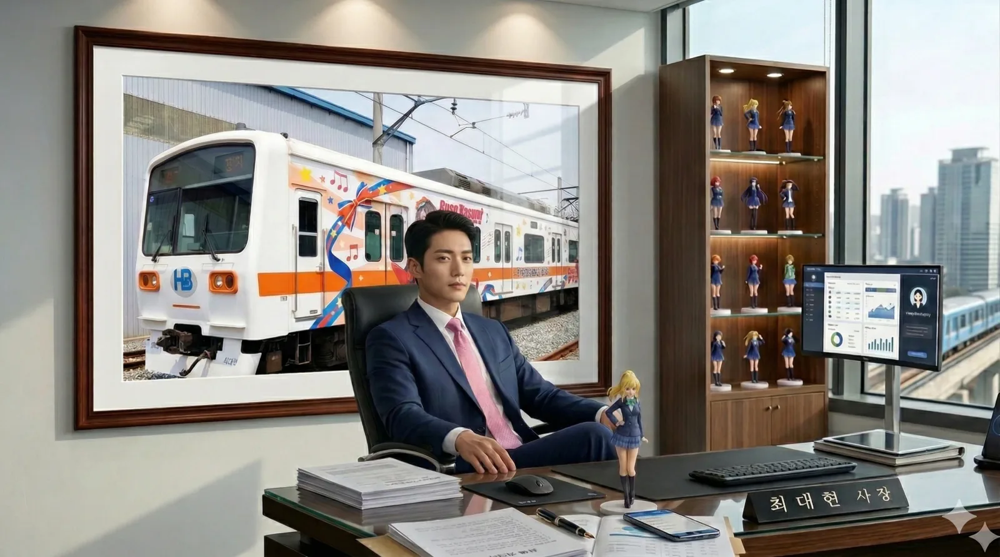
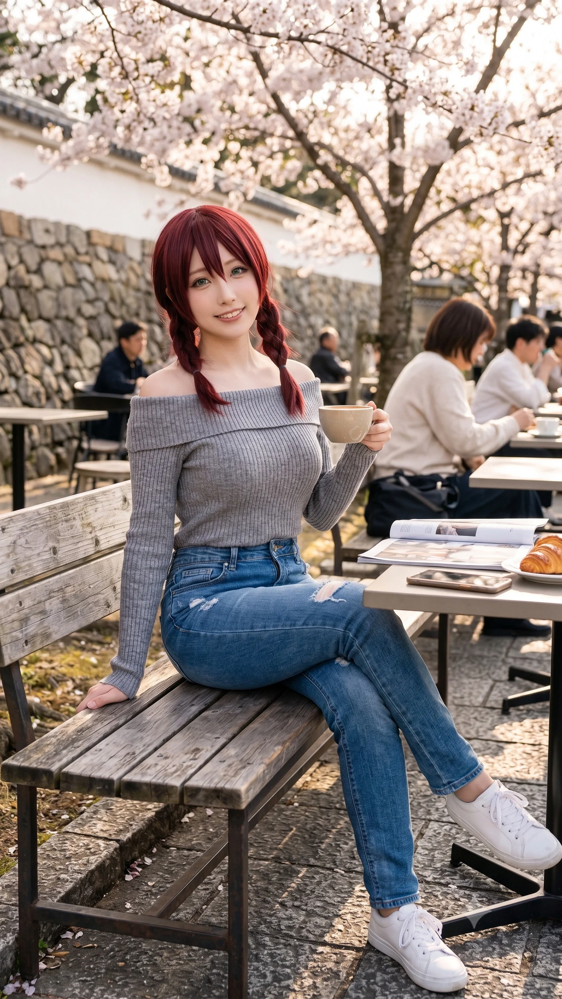
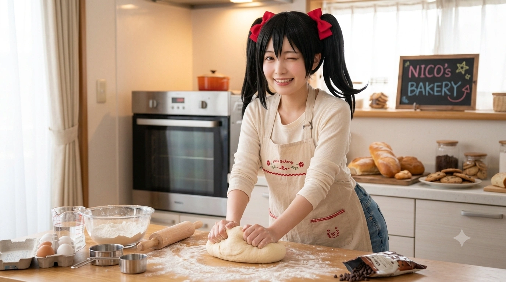

효빈종합고등학교
1. 개요
효빈광역시 북구 진희동 북쪽 끝자락에 위치한 사립 종합고등학교이다.
1990년에 개교하였으며, 효빈시 내에서도 손꼽히는 매머드급 규모를 자랑하는 학교이다.
일반적인 인문계 고등학교가 아니라 일반계, 예술계, 정보계, 상업계, 공업계, 체육계, 국제계 등 온갖 계열이 한 학교 안에 모두 존재하는 '종합 백화점' 식 구성을 갖추고 있다. 이 때문에 '현실판 니지가사키 학원'이라는 별명이 붙었다.
대한민국 교육 과정상 유지하기 힘든 구조임에도 불구하고, 사실상 무한한 자본력의 돈지랄 쑈 덕분에 전국에서 유일하게 남아있는 종합고등학교이다. 이것이 가능한 이유는 운영 주체인 회주그룹 산하 학교법인 회주재단의 무시무시한 자금력 덕분이다. 돈으로 교육과정을 매수했다 카더라 이사장인 박낙성이 "학생들이 하고 싶은 건 다 할 수 있어야 한다"는 신념 하에 적자 따위는 신경 쓰지 않고 막대한 예산을 쏟아붓고 있다.
2. 역사
- 1990년: 효빈종합고등학교 설립 인가 및 개교 (초대 교장 취임)
- 2005년: 학교법인 회주재단으로 운영 주체 변경, 예술관 및 정보관 증축
- 2016년: 학교 바로 앞에 6호선 효빈종합고역 개통
- 2020년: 다목적 체육관 및 국제관 리모델링 완료 (전액 재단 출연금)
3. 특징
단순히 학생 수만 많은 것이 아니라, 다양한 전공을 가진 학생들이 한 캠퍼스 안에서 생활하기 때문에 학교 분위기가 매우 자유롭고 활기차다. 등교 시간만 되면 기타 케이스를 멘 학생(실용음악과), 화려한 사복(연예과 실습), 작업복(공업과), 츄리닝(체육과), 그리고 단정한 교복을 입은 학생(일반계)들이 뒤섞여 있어 아침마다 코믹월드 행사장(...)을 방불케 한다.
이러한 독특한 분위기 덕분에 2호선 마스코트 캐릭터 '하루빈'의 출신 학교라는 공식 설정이 붙었으며, 서브컬처 팬들에게는 무조건 한 번쯤 방문해야 하는 '성지'로 취급받기도 한다. 물론 재학생들은 사진 찍는 오타쿠들을 보며 "또 왔네" 하고 지나갈 뿐이다.
참고로 북구의 인구가 무려 53만 명을 돌파했음에도 불구하고 관내 고등학교 개수가 인구 대비 기형적으로 적은 편인데, 그 원흉(?)이 바로 이 학교다. 효빈종합고 단일 학교가 수용하는 학생 수가 워낙 압도적인 데다, 캠퍼스 면적도 웬만한 대학교 뺨치게 넓기 때문에 교육청 입장에서는 굳이 인근에 학교를 더 지을 필요성을 못 느끼는 것. 사실상 북구 중학생들을 블랙홀처럼 빨아들이고 있다.
4. 학과 및 교육과정
고1 과정은 대부분 공통이며, 국어, 수학(공통수학1,2), 영어, 통합사회, 통합과학, 한국사 등을 이수한다.
고2, 3학년에서도 국어, 수학, 영어 등 기초 과목의 일부는 공통으로 수강한다.
4.1. 계열별 현황 (2025년 기준)
※ 모바일에서는 표를 좌우로 스크롤하여 보실 수 있습니다.
| 계열 | 세부 학과/전공 | 학급 수 | 학생 수 | 배정반 (학년 공통) | 비고 | ||||
|---|---|---|---|---|---|---|---|---|---|
| 1학년 | 2학년 | 3학년 | 1학년 | 2학년 | 3학년 | ||||
| 일반계열 | 문과 (인문사회) | 8 | 7 | 8 | 227 | 198 | 210 | 1~8반 | 사회, 문학, 경제수학 등 |
| 이과 (자연과학) | 4 | 5 | 5 | 120 | 147 | 155 | 9~12반 (3학년 ~13반) | 과학, 기하, 미적분 등 | |
| 과학중점 | 2 | 2 | 2 | 56 | 55 | 56 | 13~14반 (3학년 14~15반) | 심화 과학 과목 이수 | |
| 예술계열 | 음악과 (실용음악) | 1 | 1 | 1 | 26 | 22 | 23 | 15반 (3학년 16반) | 전공 실기 위주 |
| 미술과 (디자인) | 1 | 1 | 1 | 22 | 24 | 23 | 16반 (3학년 17반) | ||
| 문학과 (문예창작) | 1 | 1 | 1 | 22 | 22 | 23 | 17반 (3학년 18반) | ||
| 정보계열 | 정보기술과 | 3 | 3 | 2 | 60 | 70 | 52 | 18~20반 | SW, 코딩, 보안 |
| 상업계열 | 경영회계과 | 2 | 2 | 2 | 44 | 50 | 45 | 21~22반 | 회계, 세무, 금융 |
| 세무관리과 | 1 | 1 | 1 | 24 | 25 | 15 | 23반 | ||
| 공업계열 | 기계공업과 | 1 | 1 | 1 | 22 | 23 | 25 | 24반 | 기계, 메카트로닉스 |
| 공업기술과 | 1 | 1 | 2 | 27 | 27 | 34 | 25반 | ||
| 체육계열 | 체육과 | 1 | 1 | 1 | 23 | 22 | 25 | 26반 (3학년 27반) | 체육 이론 및 전문실기 |
| 국제 외국어 |
국제과 | 1 | 1 | 1 | 30 | 24 | 25 | 27반 (3학년 28반) | 국제 정치, 영어 심화 |
| 외국어과 | 2 | 2 | 2 | 50 | 43 | 46 | 28~29반 (3학년 29~30반) | 제2외국어(일/중/프) 심화 | |
| 기타 | 특별반 | 1 | 1 | 0 | 10 | 2 | 5 | 30반 | 특수교육 및 직업훈련 |
| 총계 | 30 | 30 | 30 | 755 | 757 | 755 | 전교생 2,267명 | ||
4.2. 주요 학과 설명
- 예술계열 (음악/미술/문예창작): 예술관 건물을 단독으로 쓴다. 내부에는 방음 스튜디오, 최신형 신티크가 깔린 드로잉 랩실이 존재한다. 이들의 가장 큰 적은 공업계열의 기계 굉음이며, 시험 기간만 되면 예민해진 예술과 학생들이 공업관 쪽으로 창문을 열고 사자후를 내지르는 게 연례행사다.
- 공업계열 (기계공업/공업기술): 학교 외곽의 '제1, 제2 실습동'을 차지하고 있다. 이들은 종종 학교 예산으로 알 수 없는 메카닉 장비나 엑소수트(?) 같은 걸 만들다가 선생님들한테 등짝을 맞는다.
최대현 부시장이 까마득한 학창 시절 이들의 설비를 빌려 야매 철도 모형을 만들었다는 전설이 있다. - 정보계열 (정보기술): 교내 해커 양성소(...). 매번 급식실 식단표 서버를 해킹해서 오늘 메뉴를 미리 알아내거나, 학교 인터넷 속도를 우회해서 게임을 돌리는 등 골칫거리 집단이다. 하지만 모의 해킹 대회에 나가면 상을 싹쓸이해오기 때문에 교장 선생님이 차마 건드리지 못한다.
- 체육계열: 압도적인 피지컬을 자랑하는 괴물들. 회주재단이 학교 뒷산을 통째로 사들여 크로스컨트리 훈련장을 만들어주었을 정도로 푸시를 받는다. 점심시간 매점 빵 쟁탈전에서 선두를 차지하는 건 무조건 체육과다.
5. 학교 생활
- 캠퍼스 라이프: 학교 부지가 대학 캠퍼스급(약 145,000㎡)으로 넓다 보니, 건물 간 이동 시 자전거(따릉이 비슷한 교내 공유 자전거)를 타는 학생도 흔하다. 특히 '예술관' 건물은 구조가 미궁 같기로 악명 높은데, 훗날 퓨전 전집을 런웨이로 만든 모델학과 여대생 조향림도 학창 시절 이 건물에서 매일같이 길을 잃어버리는 바람에 스위스 유학생이었던 룸메이트 엠마 체레스떼의 인도를 받아야만 겨우 등교가 가능했다 카더라.[1]
5.1. 동아리 활동 (스쿨 아이돌 동호회 등)
동아리 수가 100여 개가 넘는다. 그 중에서도 서브컬처 성지로 불리는 이유 중 하나가 바로 '스쿨 아이돌 동호회'의 존재다. 동아리실 문 앞에는 러브라이브 애니메이션에 나온 그 명패(School Idol Club)가 떡하니 붙어있다. 실제로 축제 때 이들이 공연을 하면 강당 바닥이 울릴 정도로 호응이 장난이 아니다. 물론 밴드부(뱅드림 오시들)와는 묘한 라이벌 관계를 형성하며 기싸움을 하기도 한다.
5.2. 효빈체전과 축제(효빈제)
학생 수가 2,200명이 넘다 보니 체육대회(효빈체전)와 축제(효빈제) 스케일은 북구의 지역구 축제를 방불케 한다. 특히 체육대회 때는 각 학과의 자존심을 건 대결이 벌어지는데, '체육과 vs 공업과 줄다리기 참사'가 유명하다. 공업과가 자체 제작한 외골격 수트(?)를 입고 나왔음에도 불구하고, 체육과의 압도적인 순수 근력 앞에 5초 만에 질질 끌려가며 떡실신 당한 일화는 아직도 회자된다.
5.3. 회주학사 (기숙사)
먼 지역이나 타 시도에서 유학(?) 온 학생들을 위한 대규모 기숙사 시설이다. 1인 1실 혹은 2인 1실로 운영되며, 시설이 5성급 호텔 수준이라는 소문이 있다. 조향림과 엠마 체레스떼의 '카린-엠마 콤비' 전설이 바로 이 기숙사 305호에서 탄생했다.
6. 학생 및 출신 인물 관계
워낙 스케일이 큰 학교답게, 효빈시 서브컬처계와 공직 사회를 주름잡는 기인들이 이 학교를 거쳐 가며 수많은 환장의 케미스트리를 만들어냈다.
6.1. 최대현 (현 경제부시장)

1978년생 현 효빈광역시 경제부시장이자 전 효빈교통공사 사장. 공기업 시절 "영업이익 1조 클럽"을 달성해낸 기적의 경영자다.
효빈종합고 시절 '중2병 흑역사 졸업생'으로 교무실에 이름이 박제되어 있었으며, 당시에 쓰던 "효빈철도보완계획" 망상 노트가 아직도 학교 어딘가에 봉인되어 있다는 소문이 있다. 스승 오다구의 철학인 '순수한 감성'에 '무자비한 자본주의적 수익성(가챠 도입 등)'을 결합한 'Neo-Moe Strategy (신 모에 전략)'로 공기업의 방만함을 완벽히 부수고 굿즈 판매, HAF 축제 확장, 그리고 4호선 토야마 카스미 래핑 열차 등 OSMU의 끝판왕을 보여주었다. 10살 어린 직속 후배 강수영(현 효빈디자인진흥원장)에게 툭하면 "나잇값 좀 하세요"라며 팩폭을 당하는 환장할 콤비다.
6.2. Aqours 오시 어벤져스 4인방 (당가동 자경단)
효빈시 당가동 일대 서브컬처계를 수호하는 물리·법적 심판조 라인업. 각각 탄성군과 안천구 출신임에도 굳이 효빈종합고 실업계로 다 같이 몰려온 찐 소꿉친구들이다.
- 고해영 (치카 오시 / 텐션 고문): 워터드롭 호텔 막내딸이자 "캉캉 미카아아앙!!"을 입에 달고 사는 광기의 하이텐션 소유자. 동안 외모에 정수리 바보털을 빳빳하게 세운 치카 도플갱어다. 22대 총선 당시 정철규의 망언에 분노하여 확성기를 들고 타도 시위를 주도, 상인회를 결집시켜 그의 정치 생명을 완벽히 끝장낸 전적이 있다.
- 도선요 (요우 오시 / 제복·근력): 수영으로 다져진 코어 근육과 우월한 글래머 몸매의 소유자. 효빈예대 의상학과로 진학하여 친구들의 코스프레 의상을 찍어내는 공장장이다. 진상들이 번호를 따려 하면 기관사 제복 모자를 쓰고 우람한 이두박근을 과시하며 쫓아낸다.
- 송과영 (카난 오시 / 압도적 피지컬): 해천대 재학생이자 다이빙/수영 스페셜리스트. "허그하자!"라며 기습 스탠딩 길로틴 초크를 거는 애정결핍 괴력녀다. 과거 친구들에게 라면을 끓여주려다 냄비를 크툴루 미역 괴물로 만들어 도선요에게 주방 영구 출입 금지를 당했다.
-
이리자 (리코 오시 / 쾌감펀치): 안천병원 현직 간호사. 평소엔 지적이고 단아한 간호사 코스프레를 유지하지만, 남몰래 수집한 얇은 책(동인지)을 들키면 폭주 기관차가 된다. 웬수 같은 남동생을 패면서 터득한 '쾌감펀치기술'로 보수 정치인 재진숙의 망언을 완벽히 참교육시킨 사이다 간호사다.
6.3. 조향림 & 엠마 체레스떼

효빈종합고 기숙사에서 '카린-엠마' 부부 기믹을 현실에 강림시킨 영혼의 룸메이트.
조향림은 외딴섬 인채도에서 상경한 모델학과 학생이자 심각한 방향치다. 전집에서 도매시장 심부름을 갔다가 반대편 구(區)에서 미아 선언을 한 이후 심부름이 영구 면제되었다. 대신 골반을 튕기며 도발적으로 걷는 '런웨이 서빙'으로 전집 매출을 폭발시킨 1등 공신이다.
엠마 체레스떼는 스위스 유학파로, 1년 꿇어서 조향림과 같은 학년을 다녔다. 강하애의 집에 식객으로 무단 숙식 중이며, 파전을 볼 때마다 "보우노!"를 외치며 가게 식재료를 어마어마하게 축낸다. 향수병이 도지면 애완 염소 베네(Bene)를 찾으며 울고, 진상 손님에게는 "마이너스 이온 다 죽어요~"라며 엠마 펀치(물리)를 협박하는 무서운 스위스 산악 피지컬의 소유자다.
6.4. 양미소 & 소남주

훗날 각각 동구대 조리학과와 효빈대 소비자학과로 진학해 서브컬처 미식 대결을 벌이게 될 쌍두마차.
양미소는 흑발 트윈테일에 아담한 체구(153cm)를 지닌 야자와 니코 실사판. AA컵 절벽임에도 프로필에 'B74.5'라고 앙큼하게 수치를 조작하는 합법적 조작러다. "양미소미소미~!"를 외치며 아이돌 호소인 짓을 하지만, 프라이팬을 잡는 순간 흑화한 폭군 주방장으로 돌변한다. 경영학까지 부전공하며 노정미 시의원을 찾아가 청년 창업 정책 딜을 치는 지독한 생존형 캐릭터다.
소남주는 홍콩 유학생이자 쇼우 란쥬 도플갱어. 완벽한 아가씨 비주얼이지만 정이 넘치는 '대형 댕댕이' 기질을 지녔다. 초등학생 시절 학대받던 주성우에게 만두를 건네며 "모만타이라!(문제없어!)"라고 구원해 준 첫사랑 포지션이기도 하다. 그녀가 빚어낸 소롱포(샤오롱바오)는 캠퍼스 에타를 점령하고 학생식당 정식 메뉴 청원까지 들어갈 정도로 미친 맛을 자랑한다.
7. 사건 및 사고
워낙 다양한 계열의 학생들이 한곳에 모여 있다 보니 크고 작은 해프닝이 끊이지 않는다.
-
보수 정치인 참교육(역관광) 사건:
과거 일부 꼰대(?) 보수 성향의 정치인들이 이 학교를 타겟으로 삼아 언론에 대고 개지랄(...)을 떤 적이 있다. "학교 교육과정이 너무 난잡하다", "근본 없는 잡탕 학교가 면학 분위기를 해친다", "예산 낭비다"라며 입시 위주 교육을 벗어난 자유로운 학풍에 시비를 건 것인데... 결과는 그야말로 대참사였다.
학교에 200% 만족하며 다니고 있던 2천여 명의 재학생들은 물론이고, "우리 애가 아침마다 학교 가고 싶어서 안달이 났다", "니들이 우리 애들 학비 대줄 거냐"며 환호하던 학부모들까지 단체로 극대노하여 들고일어난 것. 결국 해당 정치인들은 학부모 연합회와 학생회, 심지어 지역 주민들에게까지 십자포화를 쳐맞고 지지율이 수직 낙하하자, 며칠 만에 "오해가 있었다"며 빤스런 하듯 대국민 사과를 하는 희대의 개쪽을 당했다.입조심 안 하면 훅 간다는 걸 몸소 보여준 훌륭한 반면교사 사례다. -
예술과-공업과 중앙광장 사이버펑크 사태:
미술과 학생들이 심혈을 기울여 아방가르드한 전위예술 조형물을 중앙광장에 세워두었는데, 이를 본 공업과 기계덕후 학생들이 "심심하다"는 이유로 밤중에 몰래 고출력 모터와 LED 네온사인을 덕지덕지 달아 개조해버린 사건. 다음 날 아침, 정적인 조형물이어야 할 작품이 굉음을 내며 빙글빙글 돌고 번쩍거리는 사이버펑크 흉물로 변해버리자 예술과 전체가 극대노하여 공업관으로 쳐들어가는 사태가 벌어졌다. 결국 교장 선생님의 특별 지시로 이틀 만에 철거되었다. -
정보과 제2차 전산망 장악 사태:
중간고사가 끝난 직후, 정보과 2학년 엘리트 크루가 학교 메인 서버의 취약점을 뚫고 교내 안내 방송용 디스플레이를 전부 아야세 에리(러브라이브)와 미나토 유키나(뱅드림)의 일러스트로 도배해버린 사건. 이들은 학교망 보안을 뚫어주겠다는 명목하에(...) 교장선생님과 딜을 시도했으나, 결국 3일간 화장실 청소형에 처해졌다. -
2023년 임은혜 구출 작전 (어벤져스의 쾌감펀치):
학교 앞 으슥한 골목에서 임은혜가 혐덕 일진 무리에게 성폭력적 협박을 당하고 있을 때, 마침 근처를 지나던 송과영, 도선요, 이리자 등 Aqours 오시 어벤져스 5인방이 현장을 덮친 사건. 일진이 선요의 몸매를 훑으며 망언을 내뱉자 선요의 남자친구가 턱주가리를 박살냈고, 이어 코어통 괴물 송과영이 일진들을 저먼 수플렉스로 아스팔트에 꽂아버렸으며, 이리자의 쾌감펀치 안면 강타로 상황을 단숨에 초토화시킨 전설의 물리치료 대첩이다. 이 사건 이후 이들은 리에라몰 임세혁 점장으로부터 평생 VIP 30% 할인권이라는 자본주의의 축복을 하사받았다. -
이리자의 '얇은 책' 강제 아웃팅 슬라이딩 사태:
단아한 간호사 코스프레를 유지하던 이리자가 야간 근무를 위해 창선역 환승 통로를 전력 질주하던 중, 에코백이 열려 고수위 BL 동인지들이 바닥에 흩뿌려진 대형 사고. 지나가던 행인들이 주워주려 하자 빛의 속도로 바닥을 슬라이딩하며 "안 돼!!! 내 영혼의 양식!!"을 외쳐 역사 전체를 충격과 공포에 빠트렸다. -
엠마 체레스떼 스위스 치즈 퐁듀 전 원가 폭발 사태:
전집 알바생 엠마가 감자전 위에 스위스산 최고급 치즈를 산더미처럼 녹여 올린 신메뉴를 개발한 사건. 맛과 인스타 감성으로 대학생들 사이에서 초대박이 났으나, 치즈를 아끼지 않고 들이붓는 엠마의 큰손 덕분에 팔수록 적자가 나는 기적의 연성진이 되어버렸다. 결국 피눈물을 흘리던 강인혁 부사장에 의해 한 달 만에 메뉴판에서 영구 제명당했다. -
양미소 대동제 주점 흑화 폭군 주방장 사태:
대학 대동제 기간, 평소 "양미소미소미~"라며 애교를 떨던 양미소가 앞치마를 두르는 순간 고든 램지로 돌변한 사건. 조리가 늦는 남학우들에게 주걱을 휘두르며 "웍(Wok) 온도가 떨어지잖아!! 그러고도 니들이 조리학도냐!!"라고 사자후를 내질렀다. 이 살벌한 통제 덕분에 조리학과 주점은 3일 내내 매출 1위를 찍었지만, 이를 지켜보던 친구 성공린은 두려움에 떨며 도망쳐야 했다. -
송과영의 '찌질이 전 남친' 팔 꺾기 강제 퇴출 사건:
임은혜 구출 작전 당시, 송과영의 전 남친이라는 놈이 "너 아까 저 새끼들이랑 몸 닿았지? 딴 놈한테 맨살 보여주냐?!"라며 적반하장으로 지랄을 떨다 억지로 스킨십을 시도한 사건. 이에 다이빙으로 전완근을 단련한 송과영은 가볍게 남친의 팔을 비틀어 물리적으로 완벽하게 꺾어버린 뒤 가차 없이 이별을 통보했다. 훗날 이 소식을 들은 은혜 일당이 리에라몰의 자본력을 동원해 그 남자를 사회적으로 완벽히 매장시켰다는 훈훈한 결말이 전해진다. -
고해영의 신개념 '텐션 고문' 피시방 참교육 사건:
일진 참교육 1차전에 참여하지 못해 분통이 터진 고해영이, 일진 잔당들이 있는 피시방을 샅샅이 뒤져 옆자리에 착석한 뒤 벌인 정신 공격 사태. "야 니들이 그러고도 인간이야?! 캉캉 미카아아앙!!"이라며 귀에다 대고 쉴 새 없이 하이텐션 잔소리 폭격을 퍼부었다. 물리적 타격 하나 없이 데시벨과 텐션만으로 일진들을 "살려주세요... 기 빨려서 죽을 것 같아요..."라며 무릎 꿇게 만든 기적의 고문 작전이다. -
최대현의 1.1배 세일 조롱 마케팅 사태:
효빈교통공사 사장 최대현이 기획한 《극장판 레일루미네》 개봉 당시, 윤대환 전 시장이 상영금지 가처분을 걸자 법무팀을 동원해 무자비하게 맞고소하여 기각시킨 사건. 오히려 이 소송 논란으로 예매율이 급상승하자, 대놓고 윤대환을 조롱하기 위해 "승전 기념 1.1배 가격 할인 축제"를 열어버린 광기의 자본주의 마케팅 현장이다.
8. 이용 가능한 대중교통
■ 도시철도
- 효빈 도시철도 6호선: 효빈종합고역 (4번, 5번 출구 연결)
■ 버스
| 구분 | 정류소명 | 노선 번호 |
|---|---|---|
| 순방향 | 효빈종합고 | 20, 221, 251 |
| 역방향 | 효빈종합고(건너편) | 20-1, 221-1, 521 |
9. 여담
- 학교 이름과 시스템에서 알 수 있듯이, Love Live! Series의 니지가사키 학원을 대놓고 모티브로 하여 설립된 학교이다. 교과교실제 운영 방식이나 자유로운 학풍이 매우 유사하다.
-
2호선 마스코트 '하루빈'이 이 학교 출신이라는 설정이 붙으면서, 전국의 서브컬처 팬들이 성지순례를 하러 온다. 학교 정문이나 효빈종합고역 4번 출구 앞에서 굿즈를 들고 인증샷을 찍는 모습을 쉽게 볼 수 있다.
재학생들은 "어휴 오타쿠들 또 왔네" 하며 자연스럽게 프레임 밖으로 피해준다. -
학교가 워낙 크고 학생 수가 많다 보니(2,000명 이상), "입학하고 졸업할 때까지 얼굴 한 번 못 보는 동급생이 태반이다"라는 말이 있다. 심지어 같은 반이었는데도 졸업식 날 "너 누구?" 하는 경우도 흔하다.
이 정도면 그냥 작은 마을(동 단위) 수준이다. -
학교 교복이 학과별로 미세하게 디테일이 다르다. 일반계는 평범한 블레이저지만, 예술계는 리본/넥타이 색상이 자유롭고, 공업계는 실습복이 간지난다고 하여 타과 학생들이 부러워하기도 한다.
이리자 간호사가 이 학교 교복을 입었을 때도 파괴력이 엄청났다고 한다. -
급식실 메뉴에 가끔 괴식(?)이 등장한다. '민트초코 제육볶음'이라던가 '파인애플 김치찌개' 같은 실험작이 나오는데, 범인은 십중팔구 조리과 실습생들의 흑염룡이 폭발한 아이디어라고 한다.
물론 맛과 위장 건강은 절대 보장 못한다. -
비현실적 교육과정에 대한 음모론: 대한민국 교육계에서 유례를 찾아볼 수 없는 온갖 전공(예술, 공업, 상업, 인문, 체육 등)이 한 학교에서 최고급 퀄리티로 돌아가다 보니, 일각에서는 우스갯소리로 온갖 음모론이 제기된다. "회주재단이 돈세탁을 하는 게 아니냐", "외계인을 고문해서 커리큘럼을 짰다", 심지어 "박낙성 이사장이 심시티 현실판을 찍고 있다"는 말까지 심심찮게 튀어나온다.
근데 재단 자금력을 생각하면 심시티 현실판이라는 게 학계의 정설이다.
10. 각주
- ↑ 효빈예술대로 진학한 이후에도 조향림은 역 입구를 헷갈려 영원히 고통받는 등굣길을 경험 중이다.